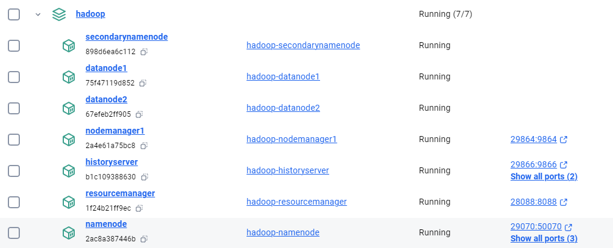

- Create a Seven-Node Hadoop Container on Docker
- Introduction
- Prerequisites
- Files Used
- Step 1: Prepare the Docker Environment
- Step 2: Build and Start the Cluster
- Step 3: Verify the Setup
- Conclusion
- Config reference
- Reference
- Create a Single-Node Hadoop Container on Docker
- Quick Steps for the Busy People
- Detailed steps - building the setup, file by file
- Appendix
- Common Errors and Their Solutions
Create a Seven-Node Hadoop Container on Docker
Introduction
In this guide, I'll walk through the process of setting up an Apache Hadoop cluster using Docker containers. This setup is ideal for development and testing purposes on your local machine. I'll cover the configuration files, container setup, and how to verify that the cluster is functioning correctly.
For busy people:
- Download and unzip the file to a folder
- CD and run the following commands
bash docker-compose build docker-compose up -d - You will have a full-fledged Hadoop setup

Prerequisites
- Docker installed on your machine.
- Basic knowledge of Docker and Hadoop.
Files Used
- Dockerfile: Defines the environment and how the Hadoop services will be run inside the Docker containers.
- docker-compose.yml: Manages the multi-container application, ensuring all necessary Hadoop services are launched and networked correctly.
- entrypoint.sh: A script to start the appropriate Hadoop service based on the container's role (e.g., NameNode, DataNode).
Important: If you create the
entrypoint.shfile on Windows, you must convert it to Unix format using a tool like Toolslick DOS to Unix Converter before using it in your Docker environment.
Step 1: Prepare the Docker Environment
- Dockerfile:
The
Dockerfilesets up the Java runtime and Hadoop environment. Here's the Dockerfile used:
```Dockerfile # Use Java 8 runtime as base image FROM openjdk:8-jdk
# Set environment variables ENV HADOOP_VERSION=2.7.7 ENV HADOOP_HOME=/usr/local/hadoop ENV HADOOP_CONF_DIR=$HADOOP_HOME/etc/hadoop ENV PATH=$PATH:$HADOOP_HOME/bin
# Install Hadoop RUN wget https://archive.apache.org/dist/hadoop/core/hadoop-$HADOOP_VERSION/hadoop-$HADOOP_VERSION.tar.gz && \ tar -xzvf hadoop-$HADOOP_VERSION.tar.gz && \ mv hadoop-$HADOOP_VERSION $HADOOP_HOME && \ rm hadoop-$HADOOP_VERSION.tar.gz
# Copy and set entrypoint script # Note: If entrypoint.sh is created on Windows, convert it to Unix format using dos2unix website. COPY entrypoint.sh /entrypoint.sh RUN chmod +x /entrypoint.sh
# Expose Hadoop ports EXPOSE 50070 8088 9000 9864 9870 9866 9867
# Set entrypoint ENTRYPOINT ["/entrypoint.sh"] ```
- docker-compose.yml:
The
docker-compose.ymlfile orchestrates the Hadoop cluster by defining services like NameNode, DataNode, and ResourceManager.
```yaml version: '3.8'
services: namenode: build: . container_name: namenode hostname: namenode environment: - CLUSTER_NAME=my-hadoop-cluster volumes: - namenode_data:/hadoop/dfs/name ports: - "29070:50070" # HDFS NameNode Web UI on port 29070 - "29870:9870" # NameNode Web UI port on port 29870 - "29000:9000" # HDFS port on port 29000 command: namenode networks: - dasnet
secondarynamenode:
build: .
container_name: secondarynamenode
hostname: secondarynamenode
volumes:
- secondarynamenode_data:/hadoop/dfs/secondary
command: secondarynamenode
networks:
- dasnet
datanode1:
build: .
container_name: datanode1
hostname: datanode1
volumes:
- datanode1_data:/hadoop/dfs/data
command: datanode
networks:
- dasnet
datanode2:
build: .
container_name: datanode2
hostname: datanode2
volumes:
- datanode2_data:/hadoop/dfs/data
command: datanode
networks:
- dasnet
resourcemanager:
build: .
container_name: resourcemanager
hostname: resourcemanager
ports:
- "28088:8088" # ResourceManager Web UI on port 28088
command: resourcemanager
networks:
- dasnet
nodemanager1:
build: .
container_name: nodemanager1
hostname: nodemanager1
ports:
- "29864:9864" # NodeManager Web UI on port 29864
command: nodemanager
networks:
- dasnet
historyserver:
build: .
container_name: historyserver
hostname: historyserver
ports:
- "29866:9866" # HistoryServer Web UI on port 29866
- "29867:9867" # Additional service on port 29867
command: historyserver
networks:
- dasnet
volumes: namenode_data: secondarynamenode_data: datanode1_data: datanode2_data:
networks: dasnet: external: true ```
- entrypoint.sh: This script starts the appropriate Hadoop service based on the container’s role. Below is the script:
bash
#!/bin/bash
# Format namenode if necessary
if [ "$1" == "namenode" ]; then
$HADOOP_HOME/bin/hdfs namenode -format -force -nonInteractive
fi
# Start SSH service
service ssh start
# Start Hadoop service based on the role
if [ "$1" == "namenode" ]; then
$HADOOP_HOME/sbin/hadoop-daemon.sh start namenode
elif [ "$1" == "datanode" ]; then
$HADOOP_HOME/sbin/hadoop-daemon.sh start datanode
elif [ "$1" == "secondarynamenode" ]; then
$HADOOP_HOME/sbin/hadoop-daemon.sh start secondarynamenode
elif [ "$1" == "resourcemanager" ]; then
$HADOOP_HOME/sbin/yarn-daemon.sh start resourcemanager
elif [ "$1" == "nodemanager" ]; then
$HADOOP_HOME/sbin/yarn-daemon.sh start nodemanager
elif [ "$1" == "historyserver" ]; then
$HADOOP_HOME/sbin/mr-jobhistory-daemon.sh start historyserver
fi
# Keep the container running
tail -f /dev/null
Note: Convert
entrypoint.shto Unix format if it's created on Windows using Toolslick DOS to Unix Converter.
Step 2: Build and Start the Cluster
- Build the Docker Images:
- Navigate to the directory containing the
Dockerfile,docker-compose.yml, andentrypoint.shfiles. -
Run the following command to build the Docker images:
bash docker-compose build -
Start the Cluster:
- Start the cluster using the following command:
bash docker-compose up -d
Step 3: Verify the Setup
- Access Hadoop Web UIs:
- NameNode Web UI:
http://localhost:29870 - HDFS NameNode Web UI:
http://localhost:29070 - ResourceManager Web UI:
http://localhost:28088 - NodeManager Web UI:
http://localhost:29864 - HistoryServer Web UI:
http://localhost:29866
These interfaces will allow you to monitor the status of your Hadoop cluster and the jobs running on it.
- Run a Test Job:
-
Create Input Directory in HDFS:
bash docker exec -it namenode /bin/bash hdfs dfs -mkdir -p /input echo "Hello Hadoop" > /tmp/sample.txt hdfs dfs -put /tmp/sample.txt /input/ -
Run the WordCount Job:
bash hadoop jar $HADOOP_HOME/share/hadoop/mapreduce/hadoop-mapreduce-examples-*.jar wordcount /input /output -
Check the Output:
bash hdfs dfs -cat /output/part-r-00000Expected output:
Hadoop 1 Hello 1
Conclusion
Remember to convert any scripts created on Windows to Unix format before using them in your Docker containers to avoid potential issues. Happy coding!
Config reference
| Element | Location/Value | Description |
|---|---|---|
| Hadoop Installation Dir | /usr/local/hadoop |
The directory where Hadoop is installed inside the Docker containers (HADOOP_HOME). |
| Hadoop Config Dir | /usr/local/hadoop/etc/hadoop |
Directory containing Hadoop configuration files (HADOOP_CONF_DIR). |
| HDFS Data Directory | /hadoop/dfs/name (NameNode), /hadoop/dfs/data (DataNode) |
Directories used to store HDFS data, mapped to Docker volumes for persistence. |
| Mapped Ports | See docker-compose.yml |
Ports mapped between host and container for accessing Hadoop Web UIs. |
| NameNode Web UI | http://localhost:29870 |
Access URL for NameNode Web UI from the host machine. |
| HDFS NameNode UI | http://localhost:29070 |
Access URL for HDFS NameNode Web UI from the host machine. |
| ResourceManager Web UI | http://localhost:28088 |
Access URL for YARN ResourceManager Web UI from the host machine. |
| NodeManager Web UI | http://localhost:29864 |
Access URL for YARN NodeManager Web UI from the host machine. |
| HistoryServer Web UI | http://localhost:29866 |
Access URL for MapReduce Job HistoryServer Web UI from the host machine. |
| HDFS Input Directory | /input in HDFS |
Directory where input files for MapReduce jobs are stored in HDFS. |
| HDFS Output Directory | /output in HDFS |
Directory where output files from MapReduce jobs are stored in HDFS. |
Reference
Create a Single-Node Hadoop Container on Docker
Setting up Hadoop can be quite confusing, especially if you're new to it. The best ready-to-use setups used to be provided by Cloudera, their current docker image(as on Aug 2024) has many issues. In this guide, I’ll help you create a pure Hadoop container with just one node. This guide is divided into two sections: one for quick steps and another for a detailed setup. The container setup has been thoroughly tested and can be created easily.
Quick Steps for the Busy People
If you’re short on time and don’t want to go through the entire process of setting everything up manually, this section is for you. Just follow the instructions here, use the ready-to-use files, and your container will be up and running in a few minutes!
Steps to build the container using ready-to-use files
Note: The `hadoop-3.4.0.tar.gz` file is not included in the zip because of its large size. I’ve set up the Dockerfile to download this file automatically from the Apache website if it’s not found in the folder. However, sometimes these download links change. If you encounter any issues with the automatic download, you can manually download the `hadoop-3.4.0.tar.gz` file from this link. If this link doesn’t work, simply search online for the file, download it, and place it in the folder. You don’t need to change anything in the Dockerfile; it will work as long as the file is named `hadoop-3.4.0.tar.gz`.
If you create a .sh file or any file on Windows and plan to use it in Linux, make sure you convert it to a Linux-friendly format using this site. Other methods may not work as well. It's important to convert the file, or else it might cause many unexpected errors.
- Download the hadoop-singlenode.zip file.
- Unzip it to a folder on your laptop.
-
Open command prompt/terminal and cd to the folder where you unziped the files
bash cd path_to_unzipped_folder- Build the doccker image from the Dockerfile. There is a dotbash docker build -t hadoop-singlenode .- Run the container from the built imagebash docker run -it --name hadoop-singlenode --network dasnet -p 9870:9870 -p 8088:8088 -v namenode-data:/hadoop/dfs/namenode -v datanode-data:/hadoop/dfs/datanode -v secondarynamenode-data:/hadoop/dfs/secondarynamenode hadoop-singlenode- From inside the running container, start the Hadoop services:bash sudo service ssh start $HADOOP_HOME/sbin/start-dfs.sh $HADOOP_HOME/sbin/start-yarn.shCheck the setup
- Once the services are up you can access the Hadoop links:
-
HDFS NameNode Web UI: http://localhost:9870

-
YARN ResourceManager Web UI: http://localhost:8088

Detailed steps - building the setup, file by file
If you want to understand how to build the Docker container from scratch or make custom modifications, follow these steps.
Details of the files used
The setup uses 6 files, Dockerfile, core-site.xml, hdfs-site.xml, mapred-site.xml, yarn-site.xml and hadoop-env.sh
-
Dockerfile: This is the main file. We only use Dockerfile for our setup and no docker-compose.yml. But, you can add a docker-compose if you need. The filename is
Dockerfile(no extension) and has the following content:```bash
Use a base image with Java 8
FROM openjdk:8-jdk
Set environment variables for Hadoop
ENV HADOOP_VERSION=3.4.0 ENV HADOOP_HOME=/usr/local/hadoop ENV JAVA_HOME=/usr/local/openjdk-8 ENV PATH=$PATH:$HADOOP_HOME/bin:$HADOOP_HOME/sbin ENV HDFS_NAMENODE_USER=dwdas ENV HDFS_DATANODE_USER=dwdas ENV HDFS_SECONDARYNAMENODE_USER=dwdas ENV YARN_RESOURCEMANAGER_USER=dwdas ENV YARN_NODEMANAGER_USER=dwdas
Install necessary packages
RUN apt-get update && \ apt-get install -y ssh rsync sudo wget && \ apt-get clean
Set root password
RUN echo "root:Passw0rd" | chpasswd
Create a user 'dwdas' with sudo privileges
RUN useradd -m -s /bin/bash dwdas && \ echo "dwdas:Passw0rd" | chpasswd && \ usermod -aG sudo dwdas && \ echo "dwdas ALL=(ALL) NOPASSWD: ALL" >> /etc/sudoers
Optional: Download and extract Hadoop tarball if not already provided
COPY hadoop-${HADOOP_VERSION}.tar.gz /tmp/ RUN if [ ! -f /tmp/hadoop-${HADOOP_VERSION}.tar.gz ]; then \ wget https://archive.apache.org/dist/hadoop/common/hadoop-${HADOOP_VERSION}/hadoop-${HADOOP_VERSION}.tar.gz -O /tmp/hadoop-${HADOOP_VERSION}.tar.gz; \ fi && \ tar -xzf /tmp/hadoop-${HADOOP_VERSION}.tar.gz -C /usr/local && \ mv /usr/local/hadoop-${HADOOP_VERSION} $HADOOP_HOME && \ rm /tmp/hadoop-${HADOOP_VERSION}.tar.gz
Configure Hadoop - Create necessary directories on Docker volumes
RUN mkdir -p /hadoop/dfs/namenode && \ mkdir -p /hadoop/dfs/datanode && \ mkdir -p /hadoop/dfs/secondarynamenode
Copy configuration files
COPY core-site.xml $HADOOP_HOME/etc/hadoop/ COPY hdfs-site.xml $HADOOP_HOME/etc/hadoop/ COPY mapred-site.xml $HADOOP_HOME/etc/hadoop/ COPY yarn-site.xml $HADOOP_HOME/etc/hadoop/
Copy and configure hadoop-env.sh. JAVA_HOME MUST be set here also.
COPY hadoop-env.sh $HADOOP_HOME/etc/hadoop/hadoop-env.sh
Set ownership for Hadoop directories and volumes to 'dwdas'
RUN chown -R dwdas:dwdas $HADOOP_HOME /hadoop/dfs/namenode /hadoop/dfs/datanode /hadoop/dfs/secondarynamenode
Switch to the dwdas user for all subsequent operations
USER dwdas
Create the .ssh directory and set permissions
RUN mkdir -p /home/dwdas/.ssh && \ chmod 700 /home/dwdas/.ssh
Generate SSH keys for passwordless SSH login and configure SSH
RUN ssh-keygen -t rsa -P '' -f /home/dwdas/.ssh/id_rsa && \ cat /home/dwdas/.ssh/id_rsa.pub >> /home/dwdas/.ssh/authorized_keys && \ chmod 600 /home/dwdas/.ssh/authorized_keys && \ echo "Host localhost" >> /home/dwdas/.ssh/config && \ echo " StrictHostKeyChecking no" >> /home/dwdas/.ssh/config && \ chmod 600 /home/dwdas/.ssh/config
Format HDFS as 'dwdas' user
RUN $HADOOP_HOME/bin/hdfs namenode -format
Expose the necessary ports for Hadoop services
EXPOSE 9870 8088 19888
Set the container to start in the dwdas user's home directory
WORKDIR /home/dwdas
Set the container to start with a bash shell
CMD ["bash"]
- **core-site.xml**: Configures the default filesystem and permissions.xmlfs.defaultFS hdfs://localhost:9000 dfs.permissions false -
hdfs-site.xml: Configures the NameNode and DataNode directories.
xml <configuration> <property> <name>dfs.namenode.name.dir</name> <value>file:///usr/local/hadoop/tmp/hdfs/namenode</value> </property> <property> <name>dfs.datanode.data.dir</name> <value>file:///usr/local/hadoop/tmp/hdfs/datanode</value> </property> <property> <name>dfs.replication</name> <value>1</value> </property> <property> <name>dfs.permissions.superusergroup</name> <value>dwdas</value> </property> <property> <name>dfs.cluster.administrators</name> <value>dwdas</value> </property> </configuration> -
mapred-site.xml: Configures the MapReduce framework to use YARN.
xml <configuration> <property> <name>mapreduce.framework.name</name> <value>yarn</value> </property> <property> <name>mapred.job.tracker</name> <value>hadoop-master:9001</value> </property> </configuration> -
yarn-site.xml: Configures YARN services.
xml <configuration> <property> <name>yarn.nodemanager.aux-services</name> <value>mapreduce_shuffle</value> </property> <property> <name>yarn.nodemanager.aux-services.mapreduce.shuffle.class</name> <value>org.apache.hadoop.mapred.ShuffleHandler</value> </property> </configuration> -
hadoop-env.sh: I haven’t included this entire file because it’s large, and there’s only one change you need to make. Refer to the
hadoop-env.shfile in the zip folder. The only modification required is shown below. Note: This step is crucial. Without this, Hadoop will give an error saying it can’t findJAVA_HOME, even if you’ve already set it as an environment variable. This change follows Apache's instructions.bash export JAVA_HOME=/usr/local/openjdk-8
Building, Running, and Testing the Setup
The process for building, running, and testing the setup is the same as described in the Quick Steps section. Simply navigate to the folder, build the container, and then run it as before.
How to test the setup?
The table below shows how various components and functionalities could be tested:
| Category | Action | Command/URL | What to Look For |
|---|---|---|---|
| Verify HDFS | Check HDFS status | hdfs dfsadmin -report |
A detailed report on the HDFS cluster, showing live nodes, configured capacity, used space, etc. |
| Browse HDFS NameNode Web UI | http://localhost:9870 |
The HDFS NameNode web interface should load, showing the health of the file system. | |
| Create a directory | hdfs dfs -mkdir /test |
No errors, and the directory /test should be created successfully in HDFS. |
|
| List directory contents | hdfs dfs -ls / |
The newly created /test directory should be listed. |
|
| Verify YARN | Check YARN NodeManager status | yarn node -list |
A list of nodes managed by YARN, showing their status (e.g., healthy, active). |
| Browse YARN ResourceManager Web UI | http://localhost:8088 |
The YARN ResourceManager web interface should load, showing job and node statuses. | |
| Verify Hadoop Services | Check running services | jps |
List of Java processes such as NameNode, DataNode, ResourceManager, and NodeManager. |
| Test MapReduce | Run a test MapReduce job | hadoop jar $HADOOP_HOME/share/hadoop/mapreduce/hadoop-mapreduce-examples-*.jar wordcount /test /output |
The MapReduce job should complete successfully, creating an output directory in HDFS. |
| Verify MapReduce output | hdfs dfs -ls /output |
The /output directory should contain the results of the MapReduce job. |
Setup details
| Component | Item | Location/Value | Description |
|---|---|---|---|
| Hadoop Installation | Directory | /usr/local/hadoop |
Hadoop installation directory. |
| Version | 3.4.0 |
Hadoop version. | |
| Core Config | $HADOOP_HOME/etc/hadoop/core-site.xml |
Core configuration file. | |
| HDFS Config | $HADOOP_HOME/etc/hadoop/hdfs-site.xml |
HDFS configuration file. | |
| MapReduce Config | $HADOOP_HOME/etc/hadoop/mapred-site.xml |
MapReduce configuration file. | |
| YARN Config | $HADOOP_HOME/etc/hadoop/yarn-site.xml |
YARN configuration file. | |
| Env Variables | $HADOOP_HOME/etc/hadoop/hadoop-env.sh |
Hadoop environment variables. | |
| HDFS Directories | NameNode | /hadoop/dfs/namenode |
HDFS NameNode data directory (Docker volume). |
| DataNode | /hadoop/dfs/datanode |
HDFS DataNode data directory (Docker volume). | |
| Secondary NameNode | /hadoop/dfs/secondarynamenode |
Secondary NameNode directory (Docker volume). | |
| Environment Variables | Hadoop Home | /usr/local/hadoop |
Path to Hadoop installation. |
| Java Home | /usr/local/openjdk-8 |
Path to Java installation. | |
| System Path | $PATH:$HADOOP_HOME/bin:$HADOOP_HOME/sbin |
Updated path including Hadoop binaries. | |
| HDFS_NAMENODE_USER | dwdas |
User for NameNode service. | |
| HDFS_DATANODE_USER | dwdas |
User for DataNode service. | |
| HDFS_SECONDARYNAMENODE_USER | dwdas |
User for Secondary NameNode service. | |
| YARN_RESOURCEMANAGER_USER | dwdas |
User for ResourceManager service. | |
| YARN_NODEMANAGER_USER | dwdas |
User for NodeManager service. | |
| Networking | Docker Network | dasnet |
Docker network for the Hadoop container. |
| Ports Mapped | HDFS NameNode UI | 9870:9870 |
Port mapping for HDFS NameNode web interface. |
| YARN ResourceManager UI | 8088:8088 |
Port mapping for YARN ResourceManager web interface. |
Appendix
- Alternate command - Start the Namenode
sh $HADOOP_HOME/sbin/hadoop-daemon.sh start namenode -
Alternate command - Start the Datanode
sh $HADOOP_HOME/sbin/hadoop-daemon.sh start datanode -
Enter
jpsto see all the hadoop services
-
Command to get a report on the Hadoop setup
sh hdfs dfsadmin -report
Common Errors and Their Solutions
- Port Binding Error:
- Error:
Ports are not available: exposing port TCP 0.0.0.0:50070 -> 0.0.0.0:0: listen tcp 0.0.0.0:50070: bind: An attempt was made to access a socket in a way forbidden by its access permissions. -
Solution: Make sure that the ports you’re using aren’t already in use by other services. You can check and stop any process using these ports with these commands:
sh netstat -aon | findstr :50070 taskkill /PID <PID> /FOr you can change the port numbers in the Dockerfile anddocker runcommand. -
Permission Denied Error:
- Error:
ERROR: Attempting to operate on hdfs namenode as root but there is no HDFS_NAMENODE_USER defined. -
Solution: Hadoop services should not run as the root user. The Dockerfile sets up a non-root user (
dwdas) to run Hadoop and Hive services:Dockerfile ENV HDFS_NAMENODE_USER=dwdas ENV HDFS_DATANODE_USER=dwdas ENV HDFS_SECONDARYNAMENODE_USER=dwdas ENV YARN_RESOURCEMANAGER_USER=dwdas ENV YARN_NODEMANAGER_USER=dwdas -
Multiple SLF4J Bindings Error:
- Error:
SLF4J: Class path contains multiple SLF4J bindings. - Solution: This is usually just a warning, not an error. It means there are multiple SLF4J bindings in the classpath. It can generally be ignored, but if it causes issues, you might need to clean up the classpath by removing conflicting SLF4J jars.